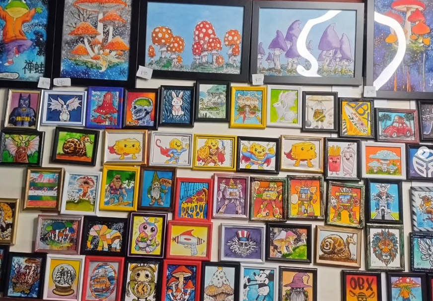

We’re so glad you’ve found your way to our little corner of the galaxy! From the mind of a lifelong artist spring forth
artistic musings of the tiny variety, and here they are gathered for your viewing pleasure. Feel free to browse our shop,
request a custom order, or explore the artist’s journey on our about page. Whether new or old friends, all are welcome in
our little cluster!
The Giving Project

For me, art isn’t just something to hang on a wall — it’s something meant to travel. Over the years, I’ve given away more than
2,000 original paintings to strangers: baristas, librarians, waitstaff, travelers, small businesses, people having hard days,
and people celebrating good ones. These gifted works range in size from small studies to larger pieces up to 20 × 24 inches,
each one placed into the world as a gesture of connection and kindness.I believe beauty should surprise us. I believe kindness
should be tangible. And I believe even a small piece of art can change the direction of someone’s day.One of my dreams is to
take this project on the road — traveling town to town along the East Coast, leaving behind paintings like breadcrumbs of wonder.
Art, at its best, connects us. This is my way of saying thank you to this strange, beautiful human family we all belong to.